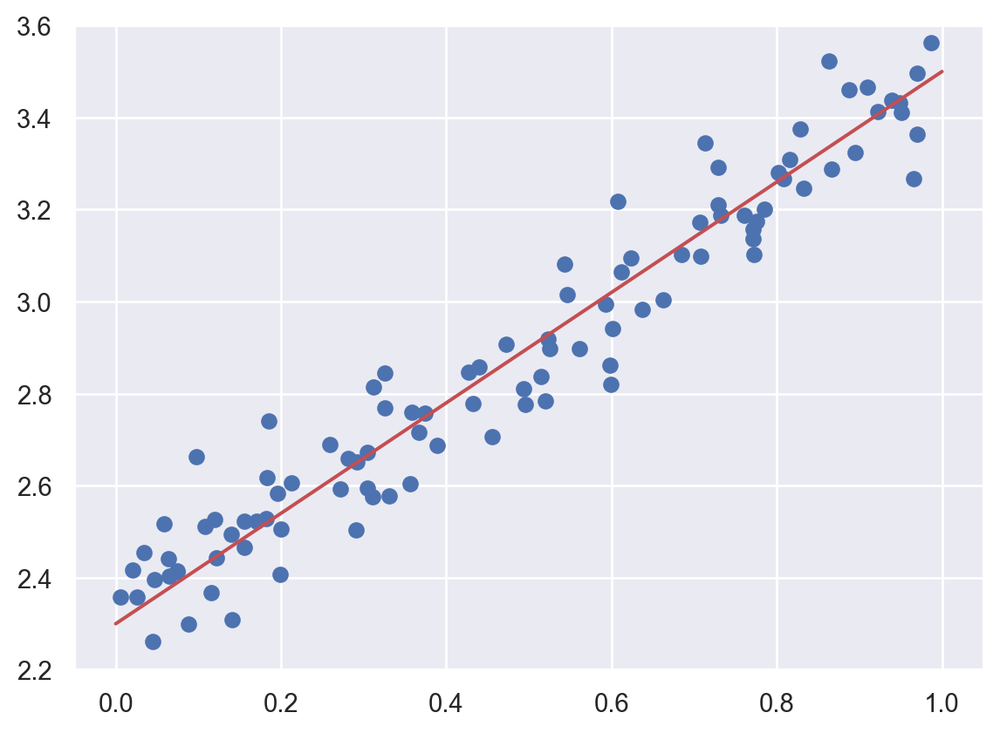
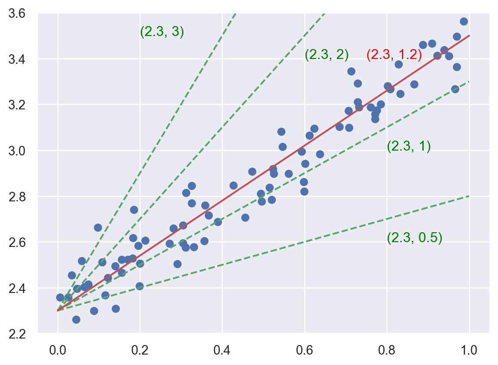
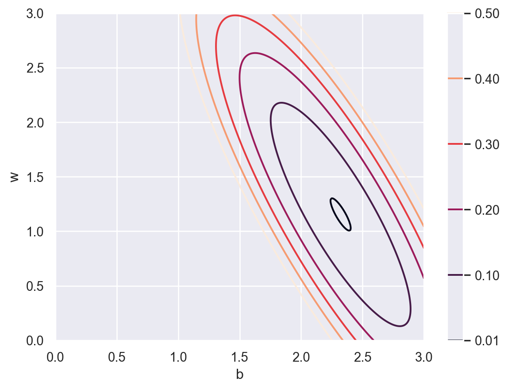
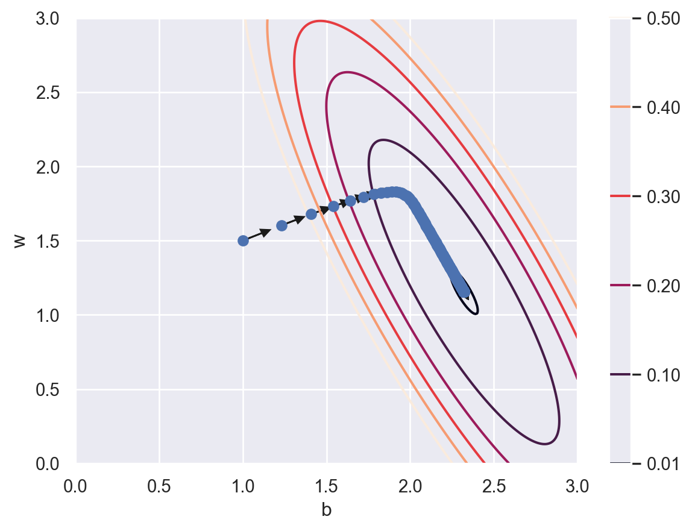

Linear regression (math)
We only consider the simplest case: simple linear regression (SLR). The idea is very simple. The dataset contains two variables (the independent variable \(x\) and the response variable \(y\).) The goal is to find the relation between \(x\) and \(y\) with the given dataset. We assume their relation is \(y=b+wx\). How do we find \(b\) and \(w\)?
Let us first see an example. We would like to find the red line (which is the best fitted curve) shown below.
The key here is to understand the idea of “parameter space”. Since we already know that the function we are looking for has a formula \(y=b+wx\), we could use the pair \((b, w)\) to denote different candidates of our answer. For example, the following plot show some possibilities in green dashed lines, while each possiblity is denoted by \((b, w)\). Then the problem is reworded as to find the best pair \((b, w)\).

The “best” is defined in the following way. The dataset is given \(\{(x_i, y_i)\}\). If we choose a pair of parameters \((b,w)\), we will have an estimated regression line, as well as a set of estimated \(\hat{y_i}\). The idea is to let the difference between \(y_i\) and \(\hat{y_i}\) is as small as possible. In other words, a loss function \(J\) is defined as follows:
\[ J_{\{(x_i,y_i)\}}(b,w)=\frac1N\sum_{i=1}^N(y_i-\hat{y_i})^2=\frac1N\sum_{i=1}^N(y_i-b-wx_i)^2 \] and we are expected to find the \((b,w)\) such that the loss function is minimized. The contour map of \(J\) is shown below.
def f(b, w, x, y):
m, n = b.shape
res = np.zeros((m, n))
for i in range(m):
for j in range(n):
res[i, j]= ((y-(b[i,j]+w[i,j]*x))**2).mean()
return res
b = np.linspace(0, 3, 301)
w = np.linspace(0, 3, 301)
bg, wg = np.meshgrid(b, w)
z = f(bg, wg, x, y)
cs = plt.contour(bg, wg, z,
levels=[0.01, 0.1, 0.2, 0.3, 0.4, 0.5]
)
plt.colorbar()
ax = plt.gca()
ax.set_xlabel('b')
ax.set_ylabel('w')Text(0, 0.5, 'w')
We use a technique called “gradient descent” to find the global minimal of \(J\). We start from a random point. For example \((1.0, 1.5)\). Then we find a direction where the cost \(J\) reduces the most, and move in that direction. After we get to a new point, we evaluate the direction where the cost reduces the most and move in the new direction. The process is repeated and we are expected to get to the minimal point after several iterations. The direction is comput
def f(b, w, x, y):
m, n = b.shape
res = np.zeros((m, n))
for i in range(m):
for j in range(n):
res[i, j]= ((y-(b[i,j]+w[i,j]*x))**2).mean()
return res
def df(p, x, y):
b, w = p
resb = ((y-b-w*x)*(-1)).mean()
resw = ((y-b-w*x)*(-x)).mean()
return np.array([resb, resw])
b = np.linspace(0, 3, 301)
w = np.linspace(0, 3, 301)
bg, wg = np.meshgrid(b, w)
z = f(bg, wg, x, y)
cs = plt.contour(bg, wg, z,
levels=[0.01, 0.1, 0.2, 0.3, 0.4, 0.5]
)
plt.colorbar()
ax = plt.gca()
ax.set_xlabel('b')
ax.set_ylabel('w')
eta = 0.2
p = np.array([1, 1.5])
for _ in range(500):
d = -df(p, x, y)*eta
ax.plot(p[0], p[1], 'bo')
ax.arrow(p[0], p[1], d[0]*.5, d[1]*.5,
head_width=0.05, head_length=0.05, fc='k', ec='k')
p = p + d